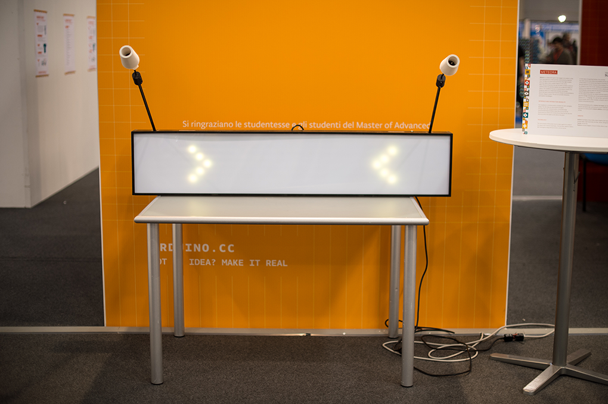
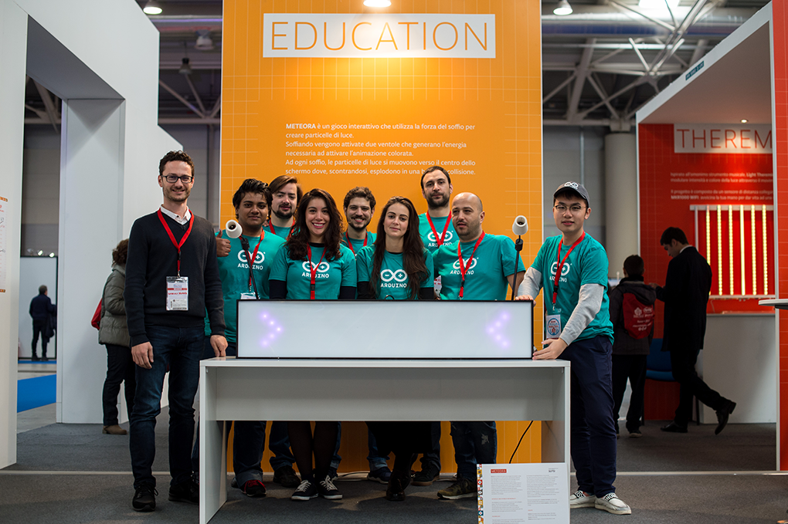
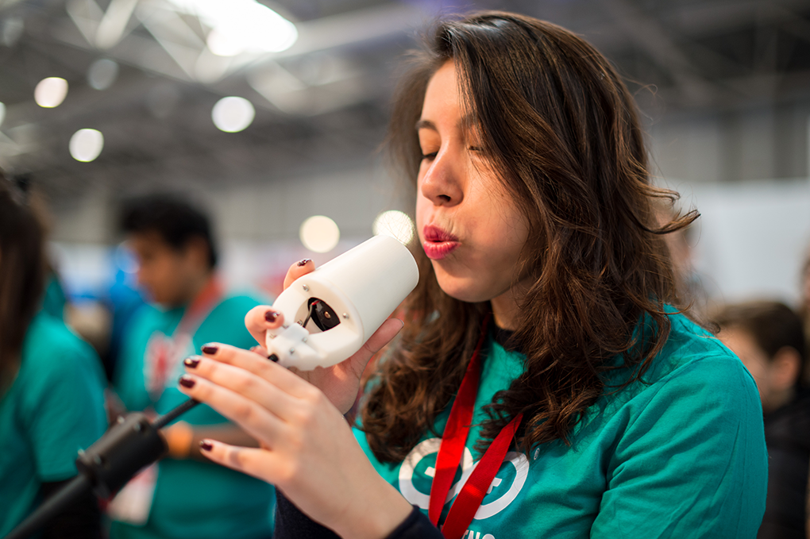
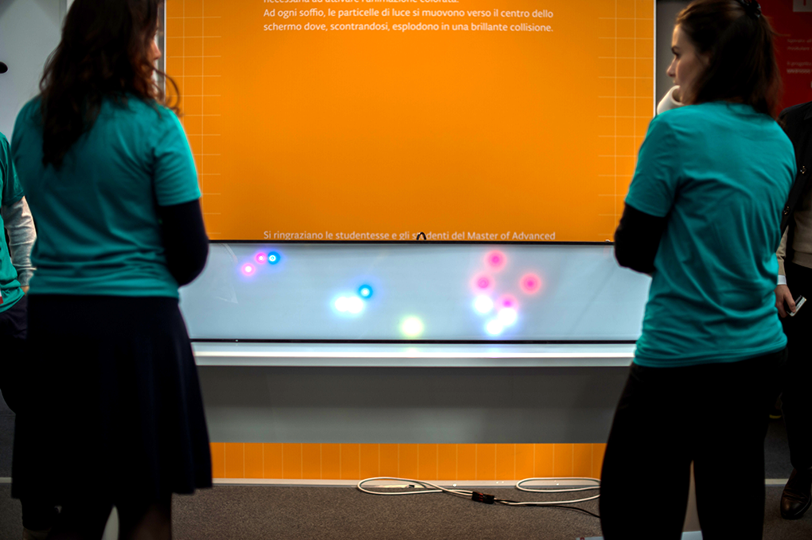
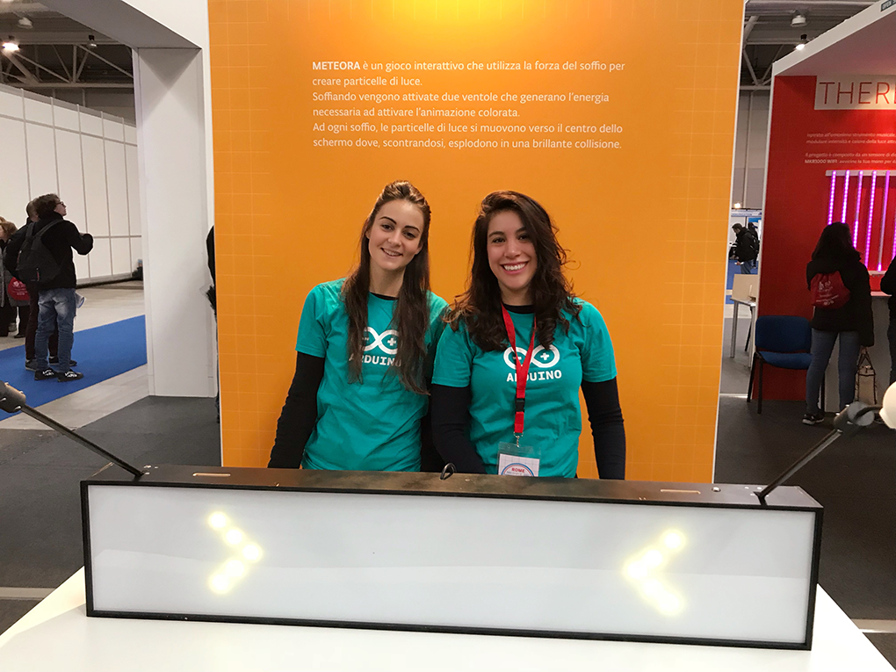
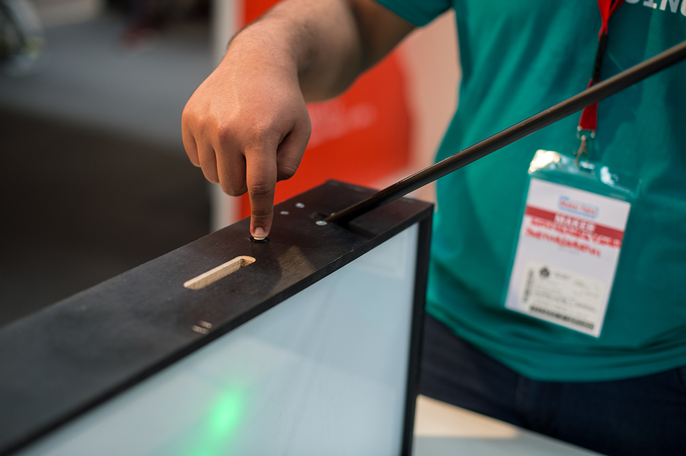
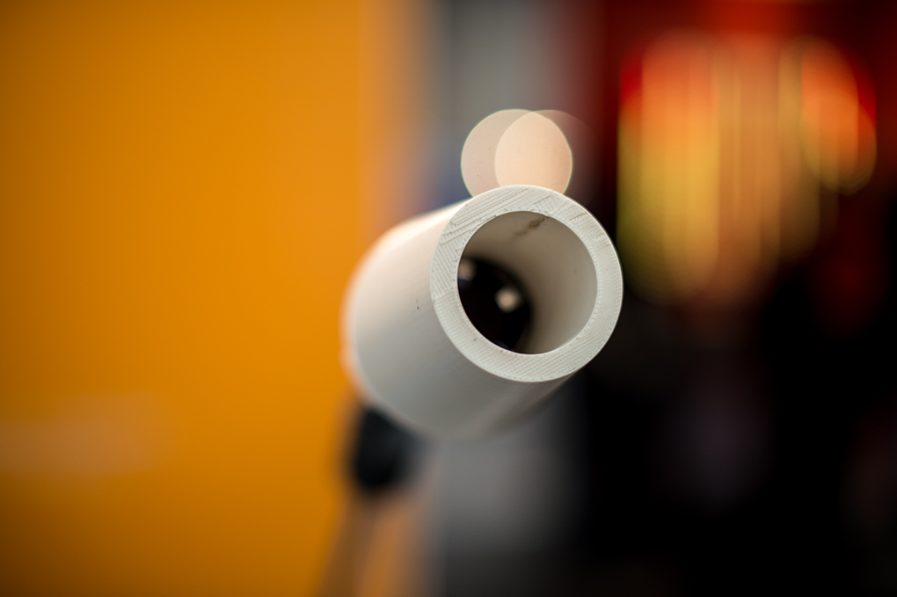
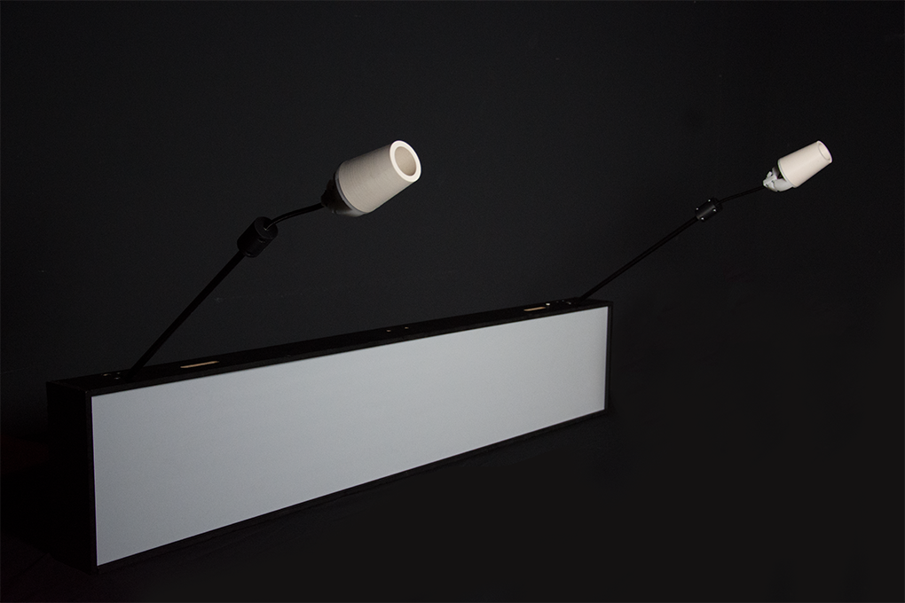
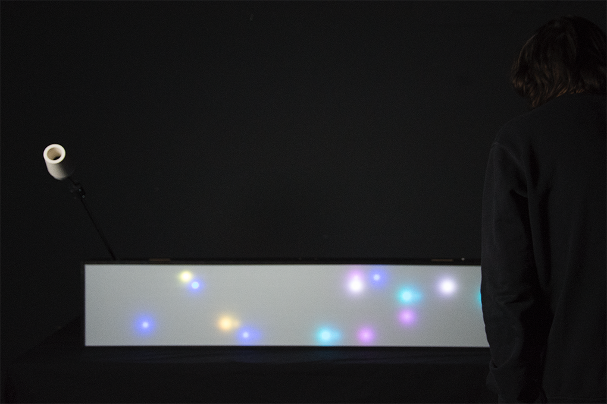
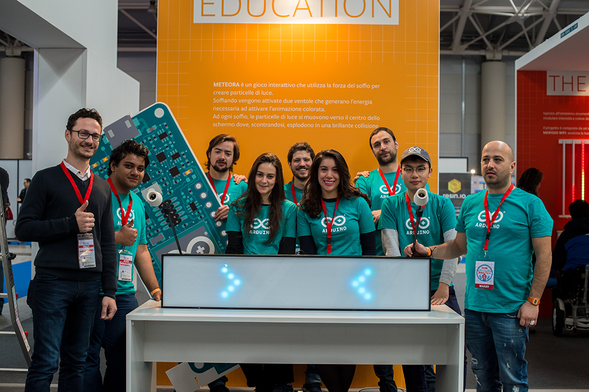

Meteora
The aim of the kit is to provide recreationally and educational experience to children hospitalized for long periods, in particular, the kit is intended for the teenager in insulation, for which the contact with other people takes place only through the glass of their room.
The idea is that the child in their room builds the robot, addressing different levels and winning points, exceed the limits of their own room, until arriving, again through the robot, in the game room. The desire and need of the teenager is to reach peers in the game room, he can communicate with them and understand what happens outside of their room. The final purpose of the robot construction is, therefore, to create communication with other patients and robots, increasing the score.










The kit is a training product that allows the patient to maintain a certain degree of socialization with hospitalized peers.
The goal is to make the hospital a gaming platform, through a new recreational and educational experience, transforming the teenager from patient to player.
To the inside of the robot, the electronic part, I used an existing robot, the mBot, that works with a programming language called Mackeblock. Mackeblock. is a programming language that works by drag and drop with the code blocks. In this way, the user can create interaction and behavior for the robot. I added a button on the robot's head with which the person who meets the robot can interact, having a reaction from the robot previously programmed by the adolescent. The robot's case has been designed using Rhino and then was printed with 3D printer with white color. Even the tuft which is applied on the robot was designed in Rhino and then printed with 3D, using the color black. I printed a bunch version girl and a boy. As for the application, I designed the graphics and the gamification system with scores and badges, using a graphic design suitable for a teen user.
The Key points of the experience are the Electronics: building and running the robot; the Programming part: programming the robot behavior, expressing their mood; the Socialization part: doing the robot to interact with other patients and other robots and the Gamification: by motivating the teenager to continue to use the robot through the levels and a scoring system. The app support the user during the robot construction, the programming part and the monitoring of the robot. In addition, through a notification system, he will be advised of the robot interactions and the acquired points. Thanks to the app the teenager will monitor the Robot status, receive notifications and see if it reaches the goals and view their profile with points and the degree of the Robot’s adaptation to its environment. With the robot metaphor, I want to get in touch the insulated patient with other peers. With this kit I propose to the patient a new experience, giving him a different role, transforming him into a player who will undertake to achieve the objectives.
My work is developed into the context of Regina Margherita Hospital, pediatric oncology and hematology department. For the user research and in order to understand the patient’s context, I interviewed some of the figures of the department staff. I analyzed the patient’s routine and what activities are carried out within the hospital. The target for the project are adolescents and pre-adolescents between 11-18 years, patients of the pediatric oncology and hematology department of the Hospital Regina Margherita of Turin. O-Kao is a robot kit, designed for children who are facing long periods at the hospital and in particular for those who faced the insulation for a certain period of time. The kit is designed so that a bedridden child can run in small steps. But through the kit also I want to increase a certain level of patient mobility, forcing him to get out of bed to build the robot, always when its state let him do it. The main purpose of the kit is to give the patient the opportunity to learn the basics of electronics and programming through the game and at the same time not to leave him isolated. Once the patient will be released from the hospital, he will have acquired the skills that can be useful for him. With the robot metaphor, I want to get in touch the insulated patient with other peers. With this kit I propose to the patient a new experience, giving him a different role, transforming him into a player who will undertake to achieve the objectives.
Meteora was a project developed on the Master in interaction design and exposed at the Maker Faire at Rome at the stage of Arduino on December 2017.The designers involved are: Andreas Adam, Marta Angelini, Dipti Ganeriwala, Zhong Junzheng, Silio Keiser, Minbau Liao, Fausto Melchiorre, Sathyanarayanan Parthasarathi, Edy Radice and Diana Valdes, on the lidership of the tutor Ubi de Feo.